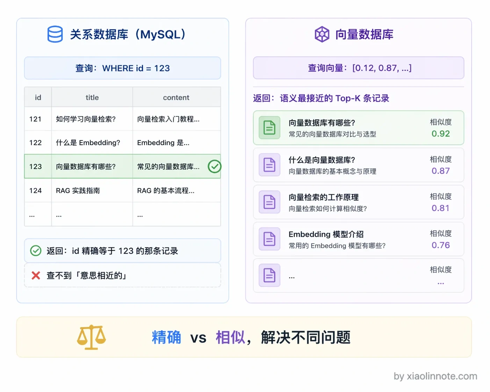
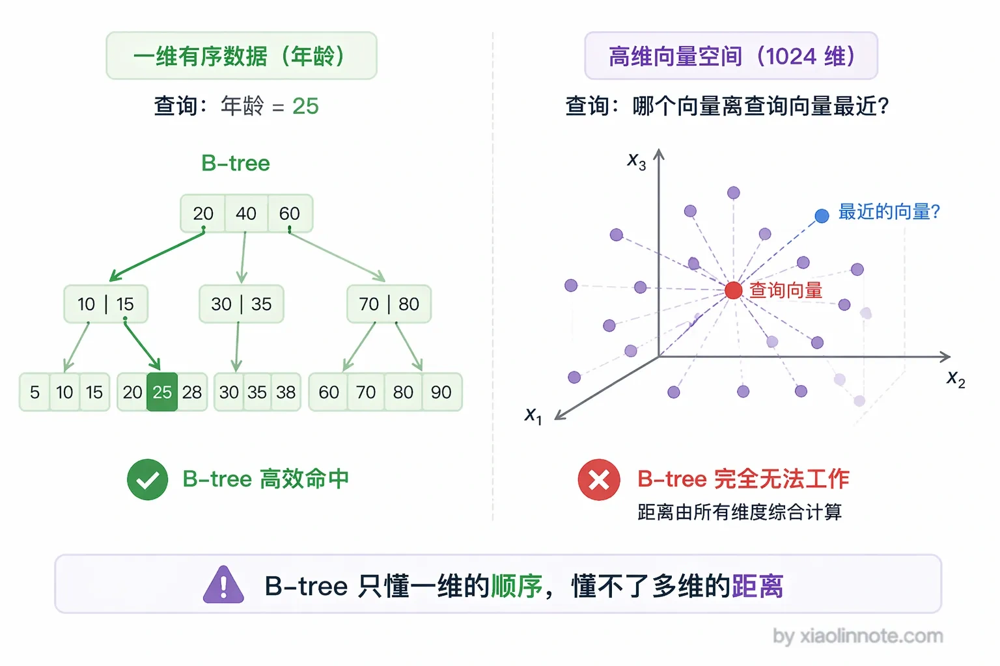
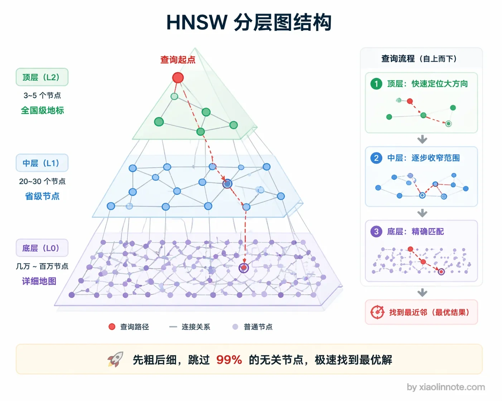
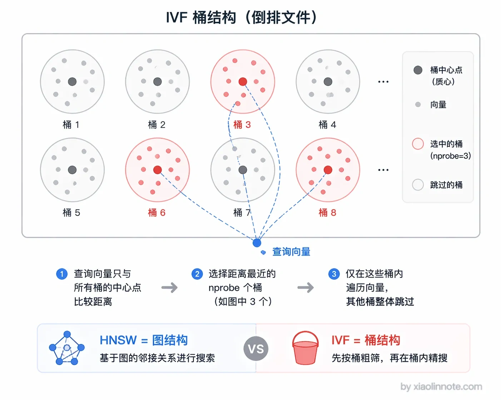
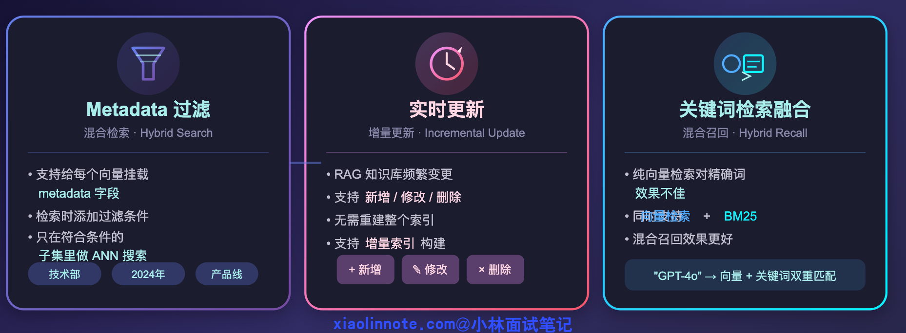
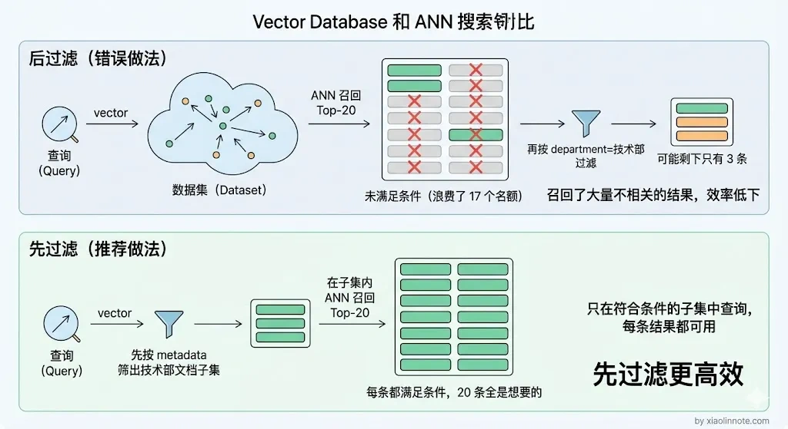

什么是向量数据库？有没有做过向量数据库的对比选型？
👔面试官：来说说什么是向量数据库？你有没有做过向量数据库的对比选型？
🙋♂️我：向量数据库我知道，就是在 MySQL 里加个向量字段，然后用 LIKE 语句做模糊匹配检索，差不多就是存向量的数据库吧。
👔面试官：MySQL 加个向量字段？那是存向量，不是向量数据库。你用 LIKE 做语义检索？LIKE 是字符串模糊匹配，跟向量相似度搜索完全是两码事。你对向量数据库的理解就停留在「存了个向量字段」？
🙋♂️我：那应该是用 Elasticsearch 吧？ES 不是也能做向量检索吗，加个 dense_vector 字段类型就行了，没必要专门引入一个新的数据库吧。
👔面试官：ES 的向量检索能力是后来加的补丁，不是原生设计，数据量一大性能根本扛不住。而且你连专门的向量数据库和传统数据库的本质区别都说不清楚，还怎么做选型？选型的时候你考虑哪些因素？索引算法了解吗？HNSW 和 IVF 听说过吗？
🙋♂️我：选型嘛，就看哪个 Star 多用哪个呗，Chroma Star 挺多的，生产环境直接上 Chroma 就行了吧？
👔面试官：Chroma 虽然现在也有 Client-Server 模式了，但超大规模场景你确定它扛得住？百万级以上的数据量你怎么保证稳定性？面试前连基本的选型标准都没搞清楚，Star 数量能当技术选型依据？回去好好了解一下各家的适用场景再来吧。
好吧，这段面试属实是把向量数据库的雷踩了个遍。下面我来从头捋清楚向量数据库到底是什么、为什么需要它、以及怎么做选型。
💡 简要回答
向量数据库是专门用来存储和检索高维向量的数据库，核心能力是近似最近邻搜索，也叫 ANN，能在百万甚至亿级的向量里快速找出最相似的几条。
传统 B-tree 不能直接解决高维近邻搜索，但关系型数据库扩展、搜索引擎和专用向量数据库都可能提供向量索引。是否引入独立组件，要看查询模式、过滤/JOIN、规模、部署、合规、运维和实测 SLO。
面试中不要把个人经历或厂商案例编造成普遍结论。应列出候选类别，再用同一数据集、过滤条件、并发、更新比例、Recall@K、P95/P99、恢复和总成本做比较。
📝 详细解析
什么是向量数据库？
向量数据库就是专门用来存储和检索「向量」的数据库。
这里的向量，指的是嵌入模型把文本、图片、音频等内容转换成的一串数值。维度、归一化和距离度量由模型与索引配置决定；向量接近表示模型认为内容相关，不等于事实相同，也不等于权限相同。
向量数据库支持的核心操作叫做 近似最近邻搜索（ANN，Approximate Nearest Neighbor）：给你一个查询向量，在库里找出和它最相似的 K 个向量，返回对应的原始内容。这正是 RAG 里「检索」那一步的底层支撑——用户问了一个问题，先把问题转成向量，再去向量数据库里找最相关的文档片段，最后喂给大模型生成回答。
很多人会把向量数据库和“在 MySQL 加个向量字段”混为一谈。更准确的说法是：关系型数据库擅长事务、约束、JOIN 和精确过滤，向量索引擅长按相似度取候选；某些关系型数据库通过扩展也能提供向量索引，两类能力经常组合。

为什么需要专门的向量数据库？
理解了向量数据库是干什么的，接下来自然会问：为什么不直接在 MySQL 或者 ES 里存向量，非要引入一个新的数据库？
普通的关系型数据库（MySQL、PostgreSQL）在存储结构化数据时靠 B-tree 索引，查询 WHERE id = 123 这种精确匹配效率极高。但向量检索要做的事完全不同——不是找「等于」的，而是找「最相近」的，没有精确匹配，只有相似度排序。
高维向量（比如 1024 维）的相似度搜索如果暴力遍历，把查询向量和库里每一条向量都算一遍余弦相似度，百万条数据就要算一百万次，延迟完全不可接受。
那为什么不用 B-tree 加速？因为 B-tree 只能处理一维的有序索引，对高维向量这种「多个维度同时要考虑距离」的场景基本是失效的。你不可能对一个 1024 维的向量建一个 B-tree，然后说「帮我找和它最近的」，因为「近」本身是一个高维空间的综合判断，不是某一个维度上的排序。

向量索引的价值在于减少候选计算，在可接受的召回损失下满足目标延迟；具体延迟取决于硬件、维度、索引、过滤、并发和数据规模，不能脱离条件承诺“毫秒级”。
核心索引算法：HNSW 和 IVF
向量检索的性能还受存储布局、过滤、缓存和资源隔离影响。HNSW 与 IVF 是常见 ANN 思路，但不是所有系统的唯一选择：
先说 HNSW（Hierarchical Navigable Small World）：它构建多层图结构，从上层导航到下层候选。召回与延迟取决于数据、距离、M、构建/搜索参数和过滤，不能写成固定百分比或默认配置结论；图结构也会带来内存与更新成本。

IVF（Inverted File Index） 先聚类分桶，查询时探查部分桶以减少候选。它可能与压缩等技术组合，但探查不足会漏召回；聚类数、探查数和实际资源需按版本与数据调参。

可以把两者理解为不同的资源交换：图导航维护图结构换取候选质量，聚类通过只探查部分桶减少计算并可能降低存储，但会引入漏召回风险。最终要在同一过滤、并发和 SLO 下压测。
向量数据库的核心能力
搞清楚了索引算法这个底层核心，再来看向量数据库在工程层面需要具备哪些能力。光有 ANN 搜索还不够，生产级系统还要支持几个关键特性：

第一个是 Metadata 过滤。业务常有部门、产品、租户、版本和 ACL；租户与权限约束必须进入召回。过滤在 ANN 前、中还是后取决于实现与选择性：后过滤可能导致 Top-K 不足，前过滤可能影响索引效率，应测过滤下的 Recall@K 和 P95/P99。

第二个是更新与一致性。需要明确写入成功、索引可见、删除生效、重试幂等和版本切换的语义；支持在线写入不等于所有副本立即可见，也不等于不需要重建或回滚。
第三个是与关键词检索融合。纯向量检索对产品型号、错误码和专有名词可能不稳定；可在同一系统或独立搜索引擎中加入 BM25，再做融合，但收益必须用领域数据验证。
选型建议
了解了向量数据库的核心原理和能力之后，最后来看一个很实际的问题：到底选哪个？
选型至少要看数据量与增长、向量维度、过滤选择性、读写比例、并发与 SLO、备份恢复、部署/托管、数据驻留、混合检索、迁移和总成本。Chroma、Qdrant、Milvus、Pinecone、pgvector 等可以作为候选示例，但功能、版本和托管形态会变化，不能只凭 Star、单个案例或固定规模推荐。
更可复用的做法是按候选类别压测：轻量嵌入式/服务、关系型扩展、搜索引擎、专用向量数据库和托管服务分别验证过滤召回、P95/P99、更新可见性、故障恢复、容量成本和权限隔离。
把几个常用的选项对比一下，方便选型时做决策：
| 数据库 | 部署方式 | 适合规模 | 混合检索 | 主要优势 | 主要劣势 |
|---|---|---|---|---|---|
| 候选 | 可能匹配的约束 | 需要验证 | |||
| --- | --- | --- | |||
| 轻量嵌入式/服务 | 原型、单机或小规模 | 并发、备份、恢复、升级和扩展 | |||
| 关系型扩展 | 已有事务库，需要 JOIN/统一运维 | 过滤下的延迟、资源竞争和备份 | |||
| 搜索引擎 | 词法检索、过滤和聚合是核心 | 向量质量、索引更新和资源隔离 | |||
| 专用向量数据库 | 向量检索、分片/副本是主路径 | 扩缩容、一致性、恢复和迁移 | |||
| 托管服务 | 团队不希望维护集群 | 数据驻留、网络、计费和供应商锁定 |
🎯 面试总结
回到开头那段面试，面试官问「什么是向量数据库」，不要只把它理解成“普通数据库加个向量字段”。核心是向量相似度检索及其配套的过滤、更新、存储、权限和运维能力；传统 B-tree 不能直接解决近邻搜索，但带向量扩展的关系型数据库也可能是合理方案。
面试官追问选型标准时，可以从规模与增长、过滤/混合检索、部署与合规、读写和延迟 SLO、恢复与总成本回答，并说明如何用带过滤的召回率、P95/P99、更新可见性和恢复测试做决定。
具体产品应作为候选而非固定答案：已有 PostgreSQL 可能优先评估 pgvector，原型可评估轻量存储，需要分布式或托管时再比较专用数据库/服务；最终以版本、数据、权限、压测和退出方案决定。
每个选项的适用场景和优劣势都要说清楚，千万别拿 GitHub Star 数量当选型依据。另外，索引算法至少要能讲清楚 HNSW 和 IVF 的区别和适用场景，这是向量数据库的核心技术，面试官一定会问。